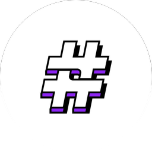
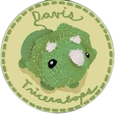
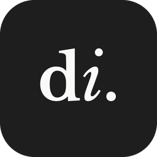

Hi, I’m Jared.
I’m a UX researcher and product designer studying Design at UC Davis (class of 2027). I’ve always loved visual design, and in high school that love turned into UX when I realized I wanted to design for people, not just make things look good. Making someone’s day easier is what keeps me going. Off screen, I’m a competitive hip-hop dancer at Davis.
My biggest project so far was Triceratops: a 17-week client engagement where I led six designer-developers through research, design, and a launched website for a UC Davis club that hides crocheted dinos around campus.
Right now, you can find me:
- Co-directing UI/UX for HackDavis 2027’s hackathon and branding narrative
- Getting ready to lead design at #include starting in January
- Preparing for dance competitions and showcases with teams in Davis and Sacramento

#include / Design LeadIncoming, Jan 2027HackDavis / UI/UX DirectorMay 2026 – Present

Davis Triceratops / Design & Development Lead (Contract)Jun – Oct 2026
Design Interactive / UX Researcher & Product Designer (Threadit)Apr – May 2026#include / UX Researcher & Brand Designer (Linguistics Club site)Jan – May 2026